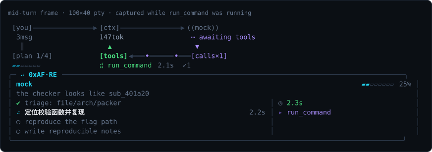
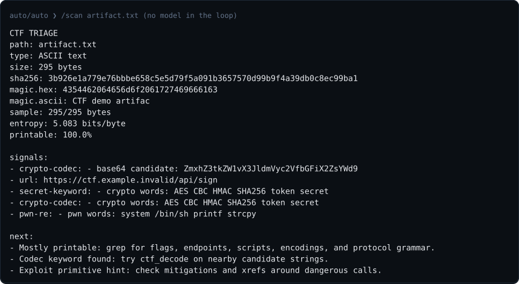

多模型组合
planner 负责路线，executor 负责工具，researcher 负责资料。三个角色可以接不同 provider 或具体模型，并可在运行中用 /planner、/executor、/researcher、/model 切换。
reverse ops deck · v0.1.2 · go 1.22
0xAF-Re 在终端里把 planner、executor 和 researcher 分开调度，配 24 个本地逆向/CTF 工具。 它能做 APK、ELF、Web/WASM、Frida hook、radare2/JADX/Ghidra/Unicorn/unidbg 工作流；有 GPT Cyber、Claude Code CVP、Grok 等更适配安全研究的 route 时体验更顺， 普通 provider 则可走 caveman 本地证据包。一个静态 Go 二进制，不需要 JS runtime。
go install github.com/overkazaf/re-agent/cmd/0xaf@v0.1.2

项目特点
0xAF-Re 源于作者日常 RE/CTF 工作里的痛点：CC 类 CLI 风控升级后，普通模型面对逆向语义也更容易过度谨慎，本地样本分析经常被打断。它不做隐写、暗语或绕策略，而是把任务限定在授权、本地、可审计范围内，再用多模型角色组合提升体验。
planner 负责路线，executor 负责工具，researcher 负责资料。三个角色可以接不同 provider 或具体模型，并可在运行中用 /planner、/executor、/researcher、/model 切换。
如果你有 GPT Cyber、Claude Code CVP、Grok 或类似更适配安全研究/逆向的 route，/workflow auto 可以走 specialist 路径，规划和工具推进会更顺。
没有 specialist route 时，caveman 会把任务拆成 planner 全局视图和 executor 本地证据包。executor 只拿收窄后的只读工具，专注文件类型、字符串、熵、导入、符号和偏移等事实。
计划加入本地模型和具体评测样例：同一个 artifact、同一套 workflow、不同 provider，对比完成率、证据质量、耗时和人工修正量，用结果推动迭代。
使用场景
把路径换成你自己的目标即可。斜杠命令直接跑本地工具；
-p 会启动一次 agent 任务。
| # | 想做什么 | 从这里开始 |
|---|---|---|
| 1 | 不知道文件是什么 | /scan ./chall |
| 2 | 看 ELF/Mach-O/PE 保护 | /mitigations ./chall |
| 3 | 找加壳、压缩或加密区段 | /entropy ./chall |
| 4 | 从 blob 里挖内嵌文件 | /carve ./blob |
| 5 | 解可疑 flag/token | /decode auto ZmxhZ3s... |
| 6 | APK 首轮分析 | /apk ./app.apk |
| 7 | 生成 Java/native hook 脚手架 | /hook java com.example.Crypto sign |
| 8 | 检查 radare2/JADX/Ghidra/Unicorn 等工具 | /retool inventory |
| 9 | Web/WASM 加密题 | /skill web-wasm-crypto inspect ./dist/app.js and ./dist/module.wasm |
| 10 | 调研壳、算法或相似样本 | 0xaf --role researcher -p "调研这个壳名，并列出安全的本地检查步骤" |
Workflow
| 模式 | 适合什么时候 | 作用 |
|---|---|---|
off | 默认 | 不改写你的 prompt |
auto | 机器上可能有 GPT Cyber / CC CVP 路由 | 能走 specialist 就走，否则走 caveman |
specialist | 有授权 cyber/CVP 类 provider | 先规划，再调用 skills 和本地工具推进 |
caveman | 普通 provider | planner -> 隔离 executor，只传本地证据包 |
/workflow auto /workflow caveman 0xaf --workflow specialist -p "triage ./app.apk"
caveman 模式不是暗语、编码或绕策略。planner 看到完整授权任务；executor 开全新会话， 只拿本地 evidence packet 和收窄后的只读工具，用来收集文件类型、字符串、熵、导入/符号、 包结构、哈希、偏移和本地 blocker。
| 隔离本地证据流程 | 具体做什么 |
|---|---|
| 1 · planner 阶段 | planner 看到完整授权任务，输出短计划和 EXECUTOR_PACKET |
| 2 · 隔离 executor | executor 开新的 provider session，只拿 packet、专用 system prompt 和收窄工具 |
| 3 · 证据工具 | executor 可 list/read/grep/hash，跑 strings/hexdump/entropy，检查符号、保护、carve 线索和 APK 结构 |
| 4 · 合并结果 | 两段都写入同一个 transcript，最终返回 planner->executor 合并结果 |
auto 只是 resolver：检测到 cyber/CVP 标记就走 specialist，
否则走 caveman。真正的两段隔离执行只在 role 为 auto
且没有固定 provider 时触发；显式角色或强制 provider 会保持原语义，只套 workflow prompt。
角色与模型
/planner deepseek /executor claude-api /researcher codex /model planner gpt-5.3-codex-high /prompt edit researcher
provider 和具体模型都能运行中切换；每个角色的 system prompt 也能单独编辑。
工具
/tools 列出内置工具 /skills 列出内置逆向 skill /retool inventory 检查 radare2、JADX、Ghidra、Unicorn、unidbg /know frida ssl pinning 从本地知识库回答，带出处 !file ./chall && strings -n 8 ./chall | head

宣传图
Banner 已合入群二维码；竖版卡片是 1080×1440，适合小红书笔记。
安装
# 1. 安装固定版本 go install github.com/overkazaf/re-agent/cmd/0xaf@v0.1.2 # 2. 离线自检：不需要 key、网络或 CLI 登录 0xaf --smoke # 3. 看当前 provider 登录状态 0xaf auth status # 4. 打开工作区 0xaf --workspace ./ctf
默认复用本机 codex 和 claude
CLI 登录；也可以改成 DeepSeek、GLM、Grok、OpenAI-compatible 或自建模型服务。